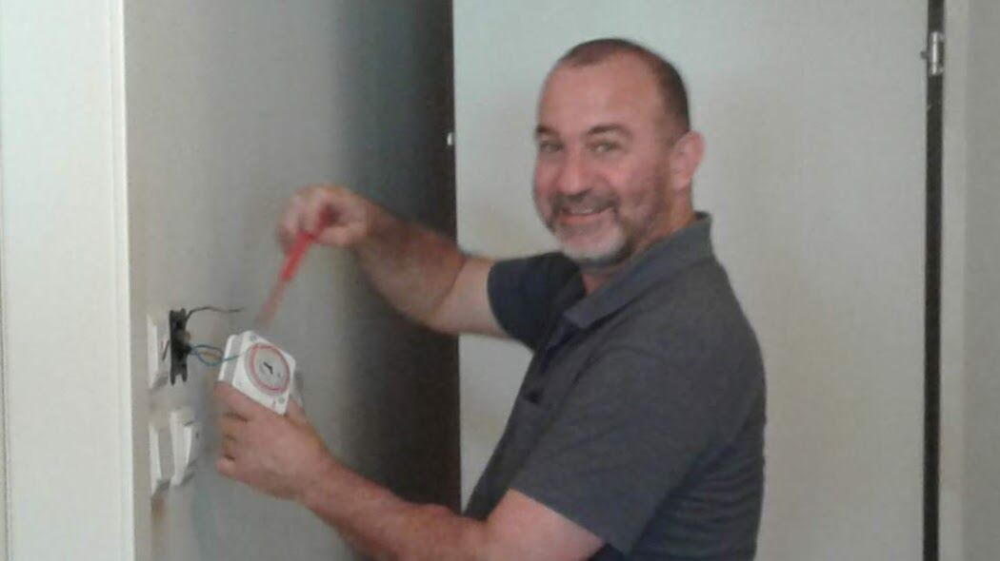
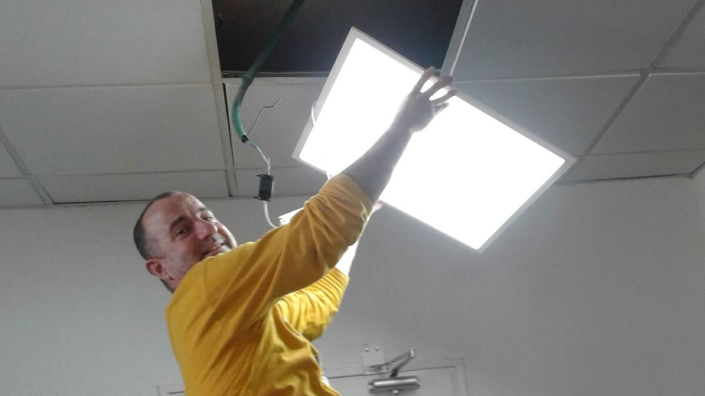
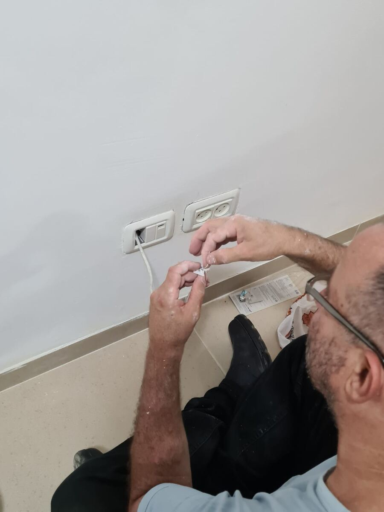
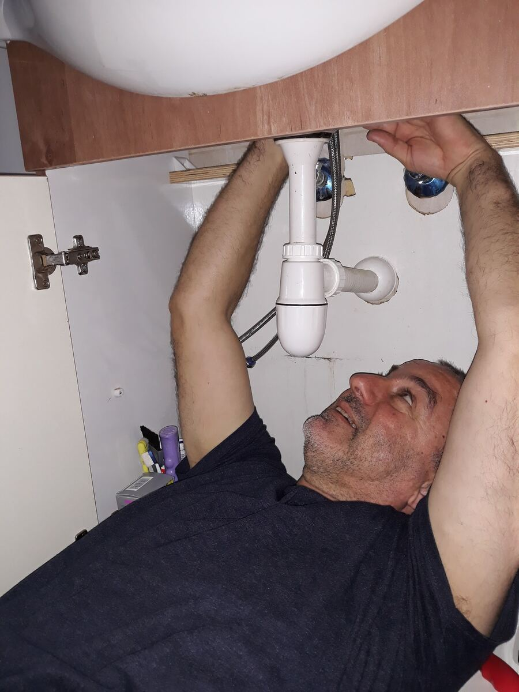
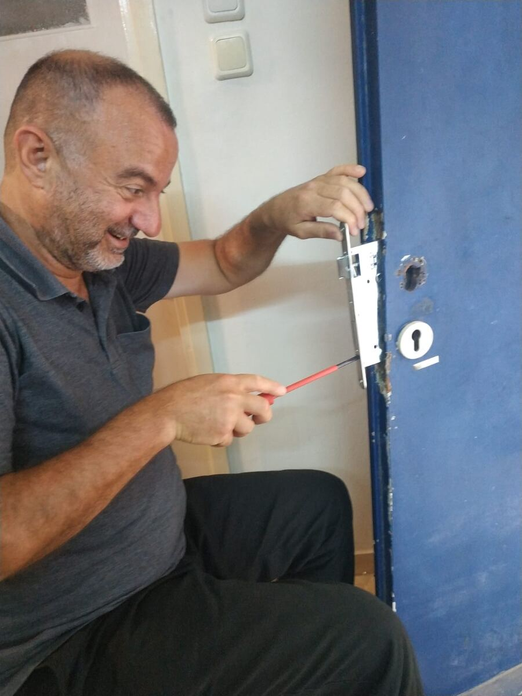

ישר. עד האפס.Level. Down to zero.
מדף, כוננית או יחידה על הקיר: נמדד, מסומן ונתלה ישר.A shelf, a unit, a cabinet on the wall: measured, marked and hung true.
-
על הקירOn the wall
מדפים, כונניות ויחידות, ישר.Shelves, units and cabinets, level.
-
תיקוני קירותWall repairs
״ידי זהב״, כך כתבו עליו.“Hands of gold,” one review says.
-
צבעPaint
עבודת צבע ממש מקצועית.A really professional paint job.
-
בזמןOn time
מגיע בזמן, עובד לפי התקן.Arrives on time, works to standard.
יצחק בעבודה.Yitzhak at work.
תמונות אמיתיות מהעבודות שלו.Real photos from his own jobs.

מתג שעוןA timer switch 
גוף תאורהA ceiling light 
שקע בקירA wall socket 
מתחת לכיורUnder the sink
״אדם דייקן בזמנים, עקבי בין אימרותיו לתוצאותיו, עם ׳ידיי זהב׳… יצחק הוא האיש!״“Punctual, consistent between what he says and what he delivers, with ‘hands of gold’… Yitzhak is the man!”

״חיבר לי שתי כונניות לקיר והתקין מדף… מקצועי, נחמד, ודאג להסביר לי בדיוק מה הוא עושה.״“He fixed two units to the wall and put up a shelf… professional, kind, and made sure to explain exactly what he was doing.”
״יצחק מקצועי, אחראי, עובד לפי תקני עבודה. הגיע בזמן, עבד באופן יסודי.״“Yitzhak is professional, responsible, works to proper standards. He came on time and worked thoroughly.”
מסמן, קודח, מחזיק.Mark, drill, hold.
ומסביר לכם כל צעד בדרך.And explains every step as he goes.
מה לעשות, ואיפה?Which job, where?
בוחרים, ויצחק מקבל הודעה מסודרת.Pick, and Yitzhak gets a tidy message.
שדרות
מוריה 125.125 Moriah Blvd.
שדרות מוריה 125, חיפה · 054-984-7272125 Moriah Blvd, Haifa · 054-984-7272